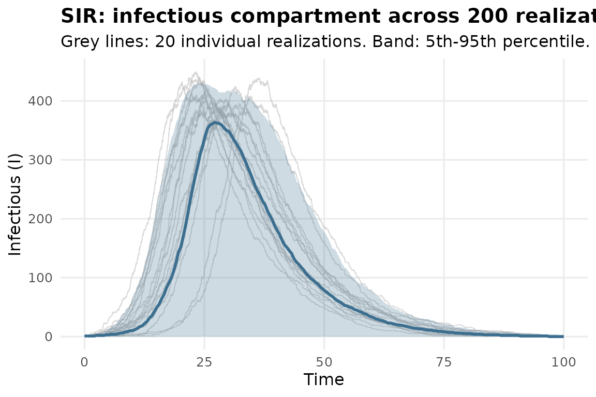
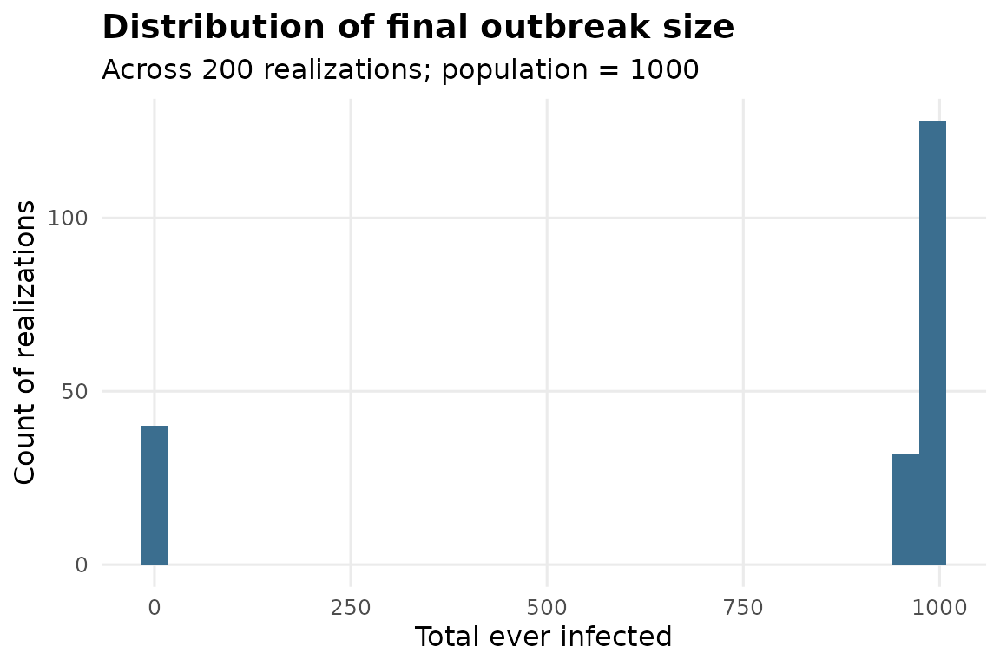
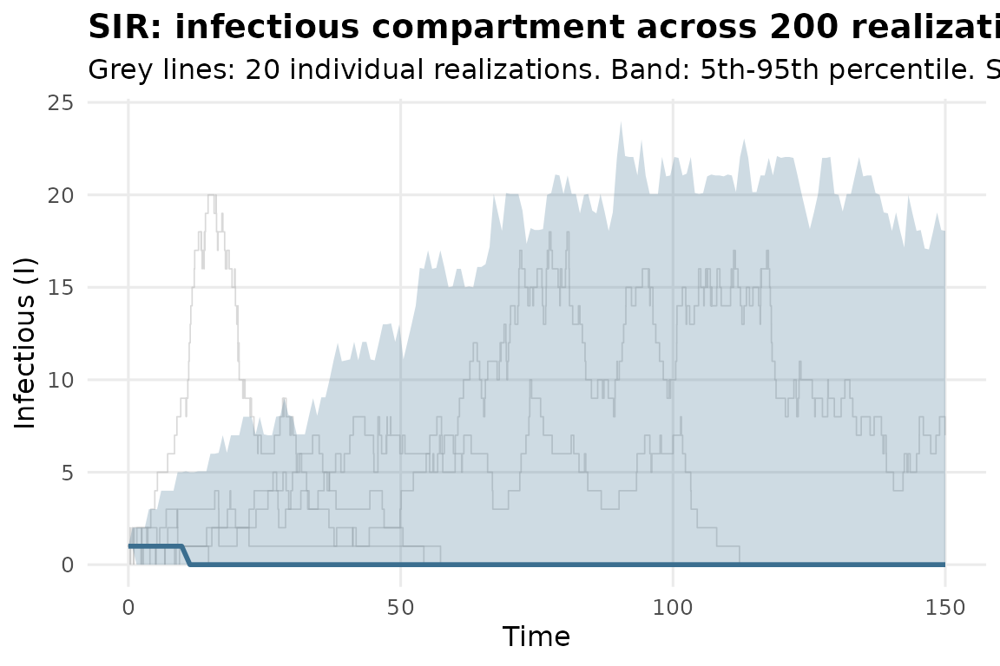
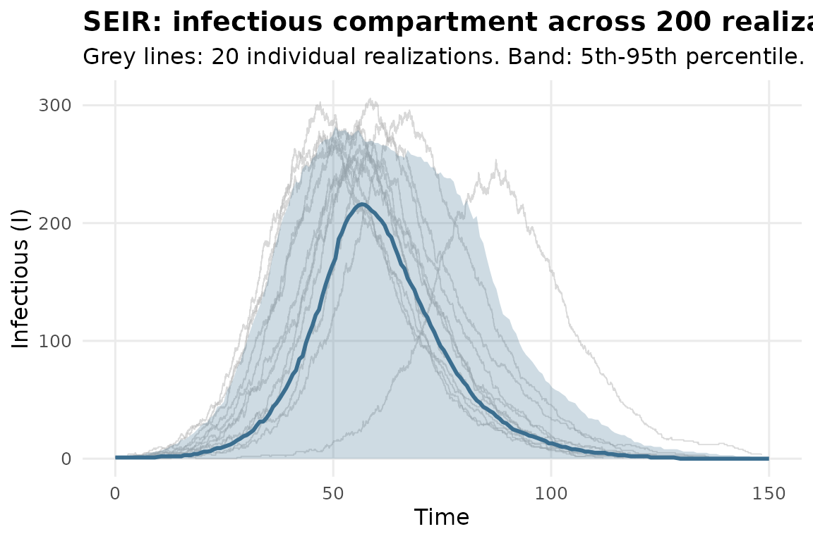
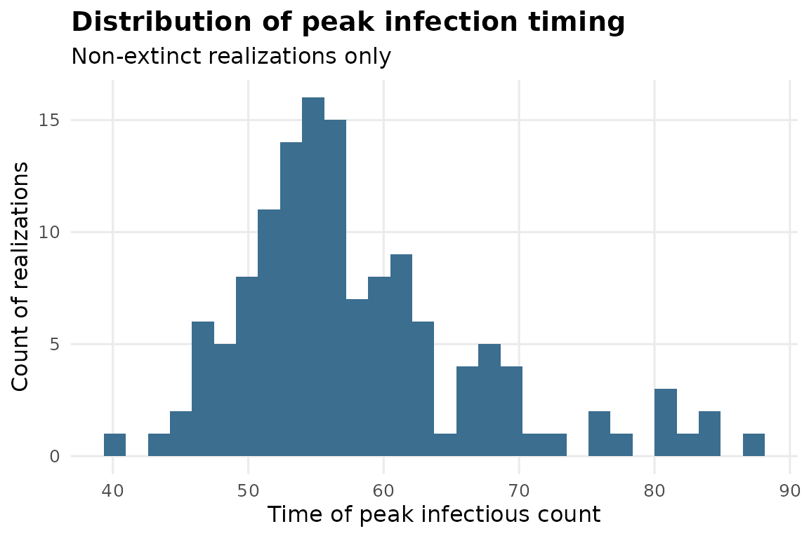

Getting Started: Epidemic Simulation Pipeline
Source:vignettes/gillespie-epidemic.Rmd
gillespie-epidemic.RmdWhy stochastic, not deterministic
A deterministic SIR/SEIR model (a system of ODEs) gives you one
trajectory: given beta and gamma, the outbreak
either happens or it doesn’t, and if it does, it always looks the same.
Real outbreaks with a small number of initial cases don’t work that way
– by chance, the first infected individual might recover before
infecting anyone, and the whole thing fades out even when R0 is
comfortably above 1. simulate_gillespie_epidemic() runs the
exact stochastic process (Gillespie’s direct method, no
time-discretization approximation) many times and shows you the spread
of outcomes, not just the average one.
A basic SIR outbreak
fit <- simulate_gillespie_epidemic(
model = "SIR",
initial_state = c(S = 999, I = 1, R = 0),
params = list(beta = 0.4, gamma = 0.1),
t_max = 100, n_sim = 200, seed = 1
)
fit
#> <omicsuite SIR Gillespie epidemic simulation>
#>
#> Realizations: 200
#> Initial state: S=999, I=1, R=0
#> Parameters: beta=0.4, gamma=0.1
#>
#> R0 = 4.00
#> Median final outbreak size: 978 (of 1000)
#> Proportion of realizations with early stochastic extinction: 20.0%
#>
#> Verdicts:
#> [INTP] interpretation[R0] R0 = beta / gamma = 4.00. Above the epidemic threshold -- sustained transmission is expected in a well-mixed population. [see plots$trajectory_plot]
#> [INTP] interpretation[extinction_probability] 20.0% of 200 realizations resulted in early stochastic fadeout (fewer than 5% of the population ever infected). Most realizations produced a sustained outbreak; stochastic fadeout is a minor consideration here. [see plots$peak_time_hist]
#> [INTP] interpretation[final_size] Among the 160 realization(s) that became a sustained outbreak (not an early fadeout), the median final size was 980 (98.0% of the population of 1000), with an interquartile range of 975 to 984. [see plots$final_size_hist]
plot(fit, which = "trajectory_plot")
Notice the grey lines: some of those 200 realizations barely got
started before recovering their way to extinction, even though
beta / gamma = 4 is well above the epidemic threshold.
That’s the point of running an ensemble instead of a single
deterministic curve.
plot(fit, which = "final_size_hist")
fit$verdicts
#> check verdict statistic p_value
#> 1 interpretation[R0] interpretation 4.0 NA
#> 2 interpretation[extinction_probability] interpretation 0.2 NA
#> 3 interpretation[final_size] interpretation 980.0 NA
#> note
#> 1 R0 = beta / gamma = 4.00. Above the epidemic threshold -- sustained transmission is expected in a well-mixed population.
#> 2 20.0% of 200 realizations resulted in early stochastic fadeout (fewer than 5% of the population ever infected). Most realizations produced a sustained outbreak; stochastic fadeout is a minor consideration here.
#> 3 Among the 160 realization(s) that became a sustained outbreak (not an early fadeout), the median final size was 980 (98.0% of the population of 1000), with an interquartile range of 975 to 984.
#> plot
#> 1 trajectory_plot
#> 2 peak_time_hist
#> 3 final_size_histNear the epidemic threshold
This is where stochasticity matters most. With R0 just
above 1, whether any given realization becomes a sustained outbreak or
fizzles out is genuinely uncertain – a deterministic model would show
exactly one outcome, and it would hide that uncertainty entirely.
fit_threshold <- simulate_gillespie_epidemic(
model = "SIR",
initial_state = c(S = 999, I = 1, R = 0),
params = list(beta = 0.12, gamma = 0.1),
t_max = 150, n_sim = 200, seed = 2
)
fit_threshold$r0
#> [1] 1.2
fit_threshold$prop_extinct
#> [1] 0.84
plot(fit_threshold, which = "trajectory_plot")
Adding an incubation period: SEIR
If there’s a meaningful delay between exposure and becoming
infectious, add an E compartment and a sigma
rate (1 / sigma is the mean incubation period):
fit_seir <- simulate_gillespie_epidemic(
model = "SEIR",
initial_state = c(S = 999, E = 0, I = 1, R = 0),
params = list(beta = 0.4, sigma = 0.2, gamma = 0.1),
t_max = 150, n_sim = 200, seed = 3
)
fit_seir
#> <omicsuite SEIR Gillespie epidemic simulation>
#>
#> Realizations: 200
#> Initial state: S=999, E=0, I=1, R=0
#> Parameters: beta=0.4, sigma=0.2, gamma=0.1
#>
#> R0 = 4.00
#> Median final outbreak size: 978 (of 1000)
#> Proportion of realizations with early stochastic extinction: 32.5%
#>
#> Verdicts:
#> [INTP] interpretation[R0] R0 = beta / gamma = 4.00. Above the epidemic threshold -- sustained transmission is expected in a well-mixed population. [see plots$trajectory_plot]
#> [INTP] interpretation[extinction_probability] 32.5% of 200 realizations resulted in early stochastic fadeout (fewer than 5% of the population ever infected). Extinction risk is substantial even where R0 favors an outbreak -- worth reporting alongside the deterministic R0 rather than instead of it. [see plots$peak_time_hist]
#> [INTP] interpretation[final_size] Among the 135 realization(s) that became a sustained outbreak (not an early fadeout), the median final size was 981 (98.1% of the population of 1000), with an interquartile range of 978 to 985. [see plots$final_size_hist]
plot(fit_seir, which = "trajectory_plot")
Compare fit_seir$peak_time to fit$peak_time
from the SIR run above with the same beta and
gamma – the incubation period delays the peak without
changing R0, since R0 = beta / gamma doesn’t
involve sigma at all in this model structure. That’s a
useful sentence to have ready for a methods section: the incubation
period changes the outbreak’s timing, not its ultimate threshold
behavior.
plot(fit_seir, which = "peak_time_hist")